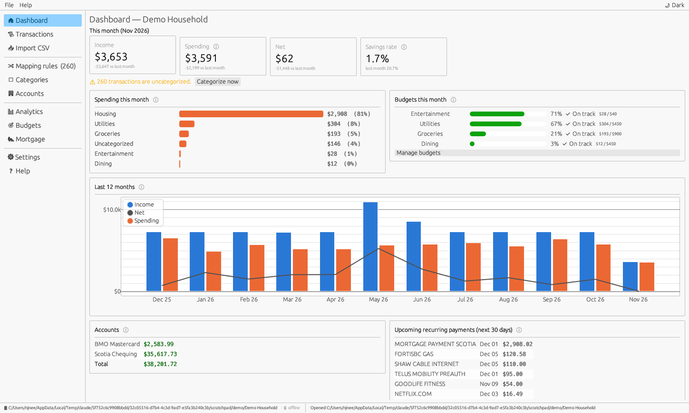
For everyone in the house: importing statements, categorizing, and understanding where the money goes.
FinTrack keeps track of a household's money. It reads the CSV files your bank lets you download, sorts each transaction into a category using rules you set up once, and shows where money comes from and goes: per week, month, quarter or year. It also tracks budgets and a mortgage.
FinTrack runs on a computer in your home (the "server") and you use it in a web browser on any
computer or phone on your home network, typically at an address like
https://miniserver.local/finances. Nothing is sent to the internet.
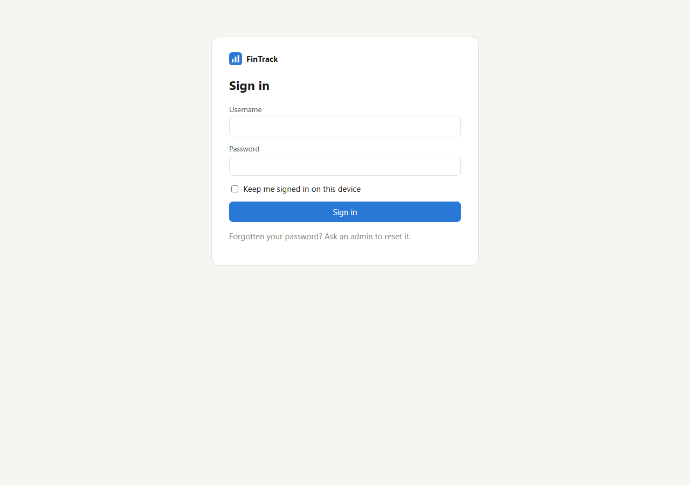
Forgotten your password? Ask an admin to reset it; you'll get a new temporary one.
Visiting? If an admin has turned on guest access, the sign-in page has a Continue as guest button. No account is needed, and you see only what the admin allows guests to see.
A household is one complete set of finances: its own accounts, transactions, categories, rules, budgets and mortgage. Most homes have one, but you might keep a separate one for a cottage or a small business. Your admin decides which households you can open, and whether you can view only or also edit.
An account is a bank account, credit card or line of credit whose statements you import. You can create accounts on the Accounts page, or on the fly while importing.
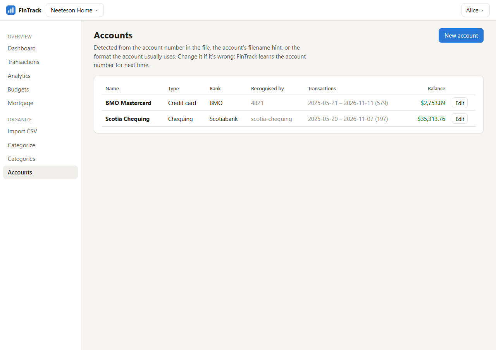
| Field | What it's for |
|---|---|
| Account number | Full number or at least the last 4 digits. Matched against account-number columns in CSV files; masked numbers such as 5191****1234 work. |
| Filename hint | Text that appears in this account's export file names (e.g.
visa). Used when the file has no account number. |
| Usual CSV format | If only this account uses a format, files in that format go to this account automatically. Filled in for you after the first import. |
| Opening balance | The balance just before the first imported transaction, so balances and net worth are right. Use a negative number for money owed on a card. |
| Archived | Hides the account from pickers and the dashboard but keeps its history. |
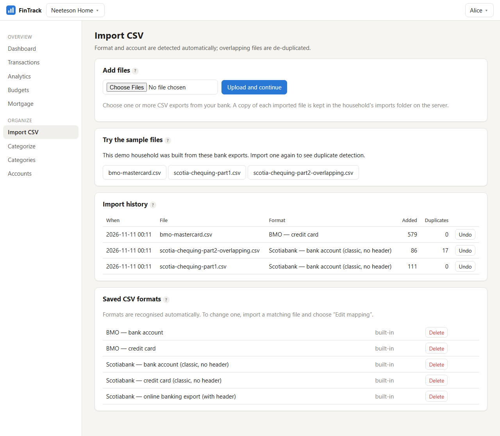
A row is a duplicate when the account already has a transaction with the same date, amount and description. So you can download "the last 90 days" every month and import it without double counting. Two identical rows within one file, like two coffees on the same day, are both kept because they are genuinely separate purchases.
Import history lists every import. Undo deletes all the transactions that import added (manual categories and notes on them are lost).
Banks lay out their CSV files differently. The first time FinTrack sees an unfamiliar layout it guesses which column is which and shows the column mapper. You only do this once per layout; afterwards the format is recognised automatically.
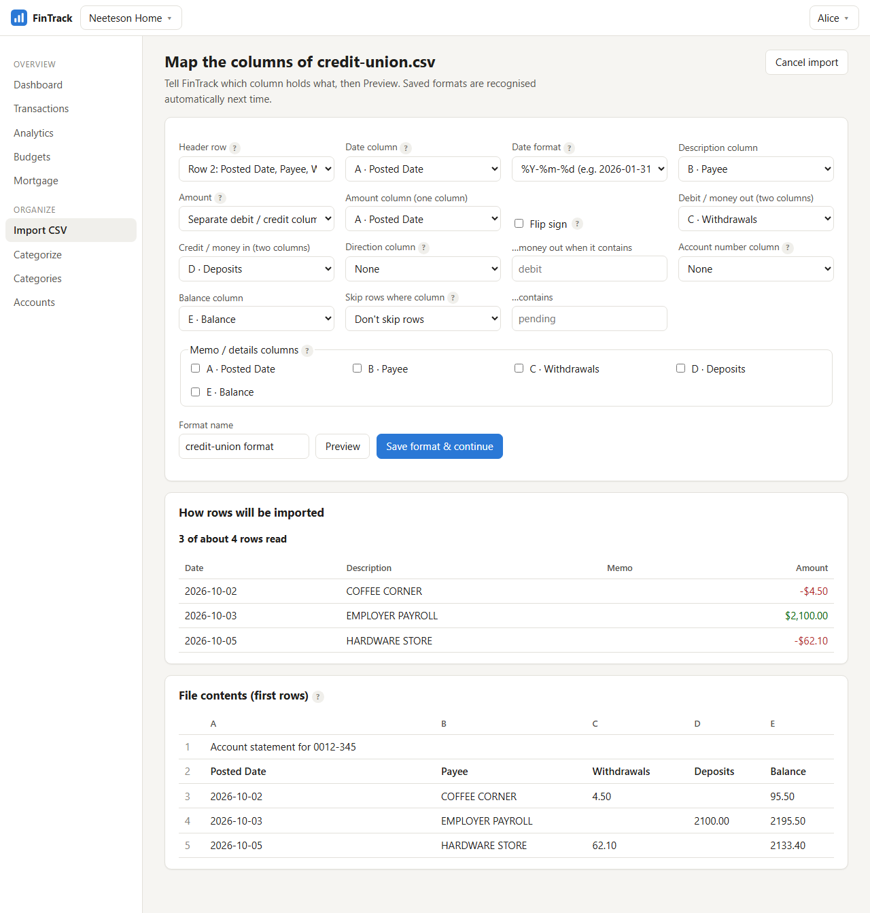
The preview below the form shows exactly how the rows will be read and updates as you change the mapping. Give the format a name, then Save format & continue. To change a saved format later, import a matching file and choose Edit mapping on the review page.
Categories have two levels: a top-level category (Groceries, Housing, Income) and optional subcategories (Groceries / Save on Foods, Income / Mayfair). A transaction can be in either level; reports can group by either.
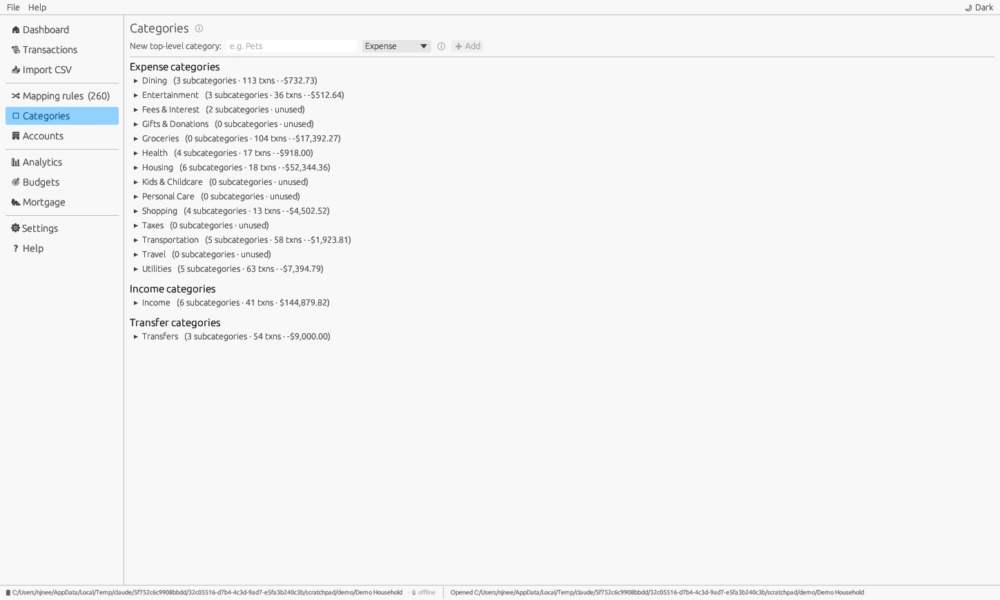
Each top-level category has a kind:
Add subcategories with the box under each category. Edit renames a category, moves a subcategory to another parent, changes the kind, or deletes it. When deleting you can move its transactions, rules and budget to another category first.
A rule says: when a transaction's description contains (or starts with, equals, or matches a pattern) some text, put it in this category. Rules apply to past transactions and to every future import.
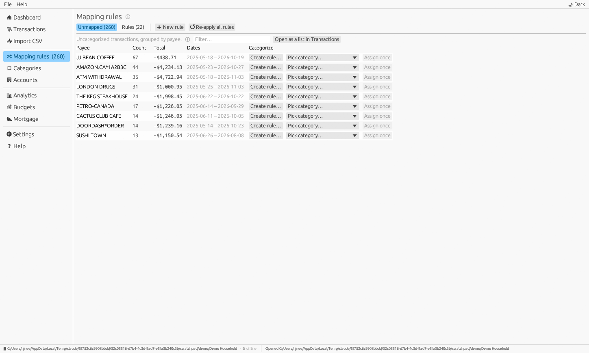
Uncategorized transactions, grouped by payee, biggest groups first. For each group:
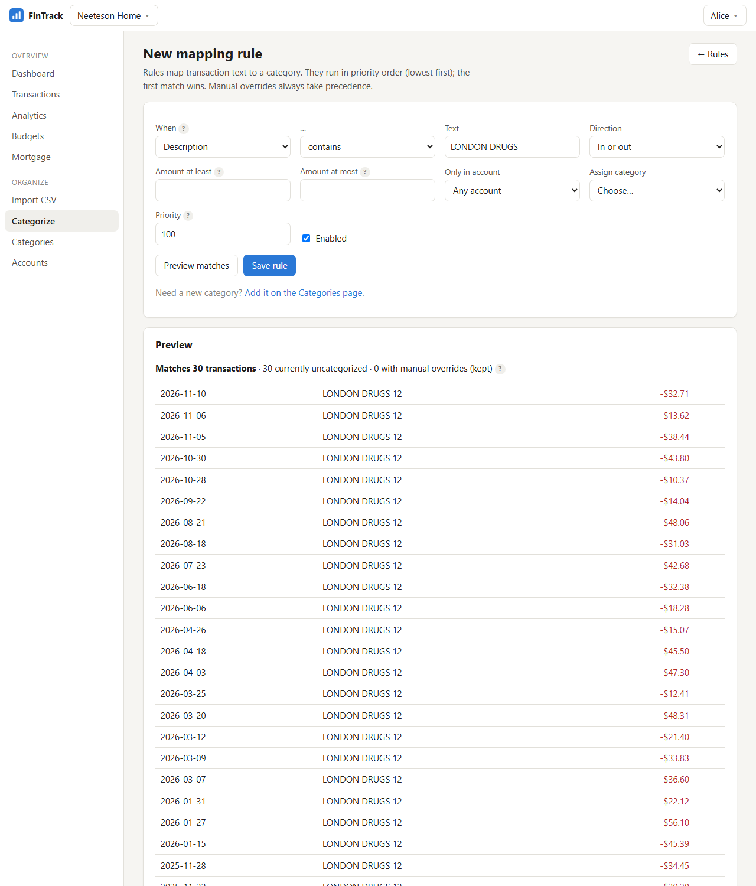
The Rules tab lists all rules with how many transactions each one categorizes, a Test a description box ("which rule would catch this?"), and on/off switches.
On the Transactions page, choosing a category for a single transaction sets a manual override (marked ✋). Rules never change it. Choose Automatic to go back to the rule result.
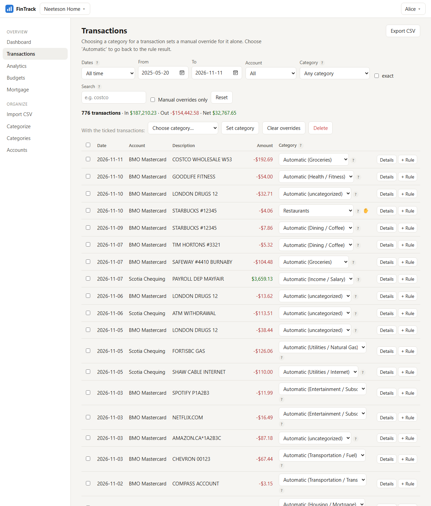
The dashboard summarises the current month:
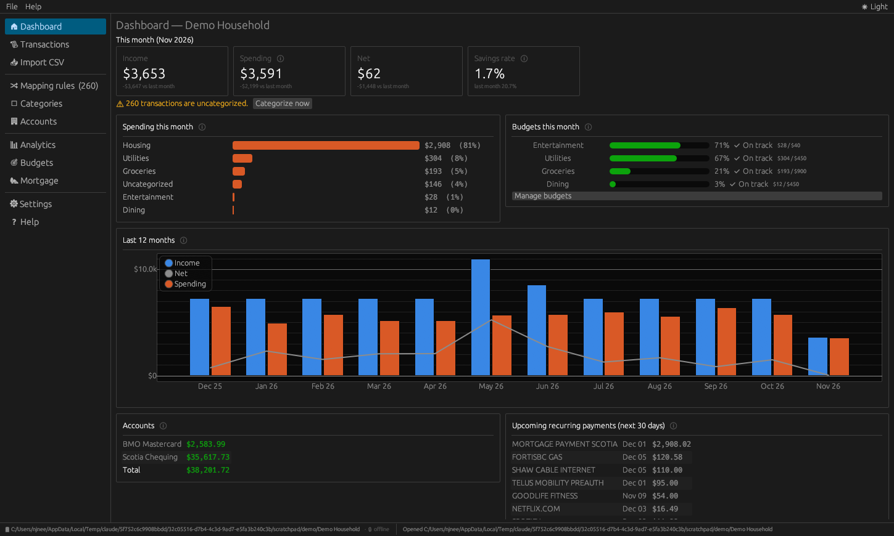
Analytics has six tabs sharing one row of controls: dates, period (weekly, monthly, quarterly, annual), show (spending or income) and group by (top-level category, subcategory, account or payee). The page updates as you change them.
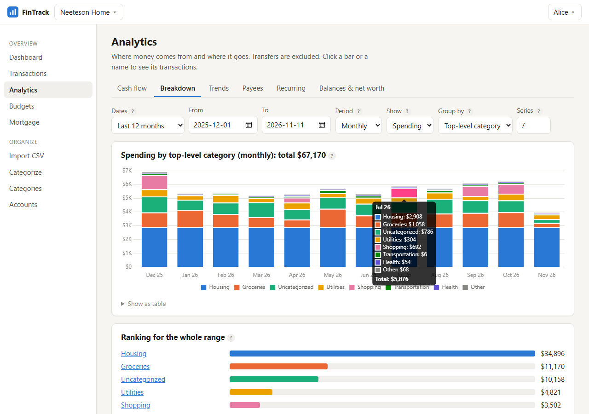
| Tab | Shows |
|---|---|
| Cash flow | Income vs spending per period with net and savings rate, and a table by period. |
| Breakdown | Stacked bars per period, a ranking for the whole range, and a table with totals, averages and shares. Series sets how many groups get their own colour; the rest are combined as Other. Click a name to see its transactions. |
| Trends | One group over time against its average, with highest and lowest periods. |
| Payees | The largest payees by total, with count, average and last date. |
| Recurring | Detected subscriptions and bills (regular interval and consistent amount) with their monthly and yearly cost. |
| Balances & net worth | Account balances over time and their total. |
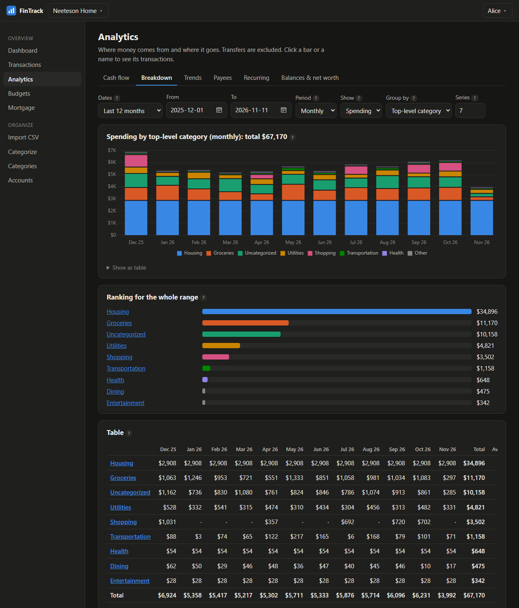
Transfers are always excluded. Uncategorized transactions count as spending or income by their sign. Refunds in an expense category reduce spending.
Set a monthly amount for any category. A top-level budget includes all of its subcategories. Switch between monthly, quarterly and annual views (budgets are multiplied by 3 or 12) and step through periods with the arrows.
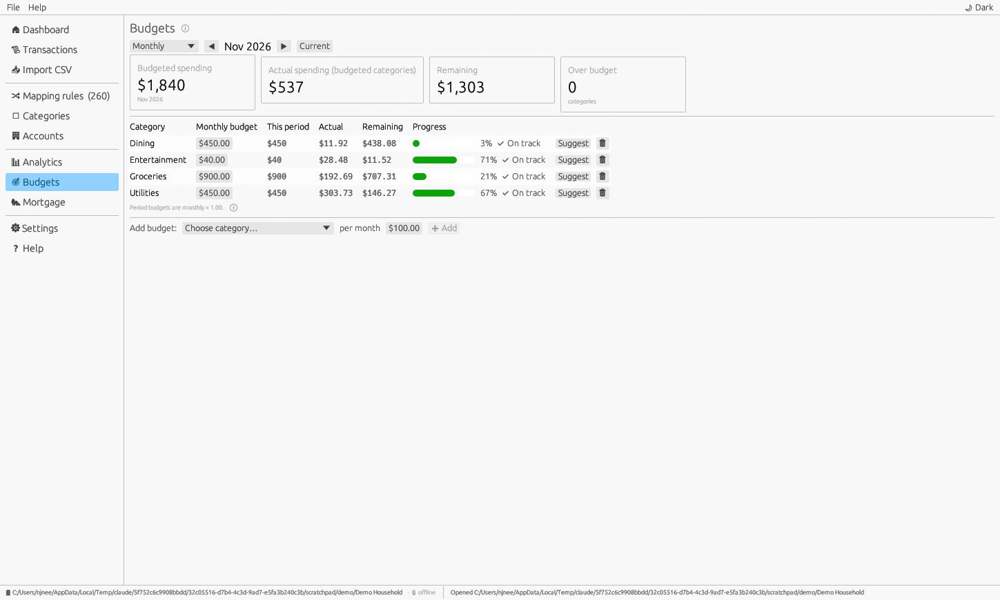
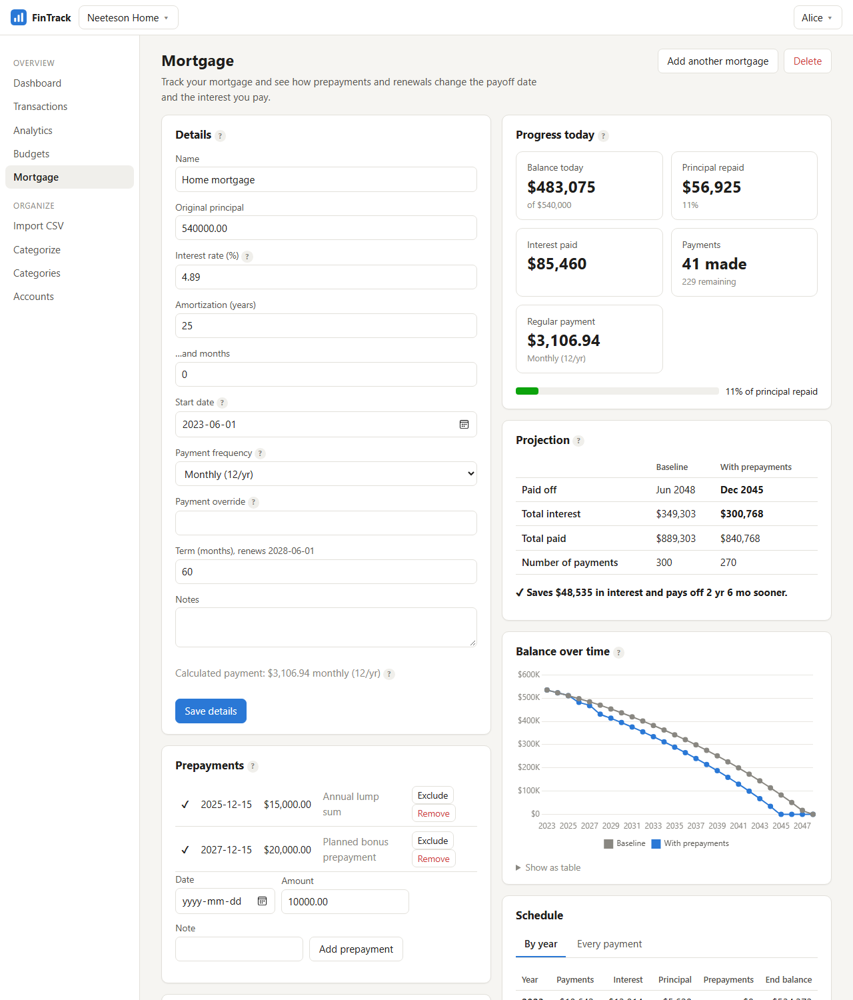
Progress today shows the balance, principal and interest paid so far. Projection compares the baseline (no prepayments) with your prepayments: payoff date, total interest, and how much interest and time you save. What-if adds an extra amount to every payment without saving anything. The schedule can be shown by year or by payment.
Open the menu with your name and choose My account to:
FinTrack adapts to small screens: the side menu becomes a scrollable row of tabs, and wide tables and charts scroll sideways.
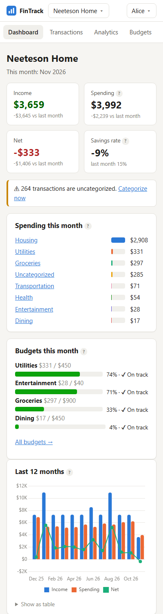
For the person who runs the server: installing, adding people, managing households and keeping backups.
FinTrack ships as a Docker image. On the server:
git clone <repository> fintrack && cd fintrack
docker compose up -d --build
docker compose logs fintrackEdit compose.yaml first if needed: FINTRACK_BASE_PATH is the address
prefix (/finances), and TZ is your time zone.
FinTrack itself serves plain HTTP on port 8080. Put your reverse proxy (Caddy, nginx, Traefik)
in front of it so browsers use HTTPS, and forward /finances to FinTrack
without removing the prefix. Ready-made examples are in the docker/
folder, including a compose file that adds Caddy if you have no proxy yet.
The log shows a one-time setup link (/finances/setup?token=…). Open it
through your proxy and create the first admin account. The link stops working once an admin
exists, so a guest on your network can't claim it. Alternatively run
docker compose exec fintrack fintrack-server admin create yourname for a temporary
password.
git pull
docker compose up -d --buildData lives in the fintrack-data volume and survives updates; databases are
upgraded automatically.
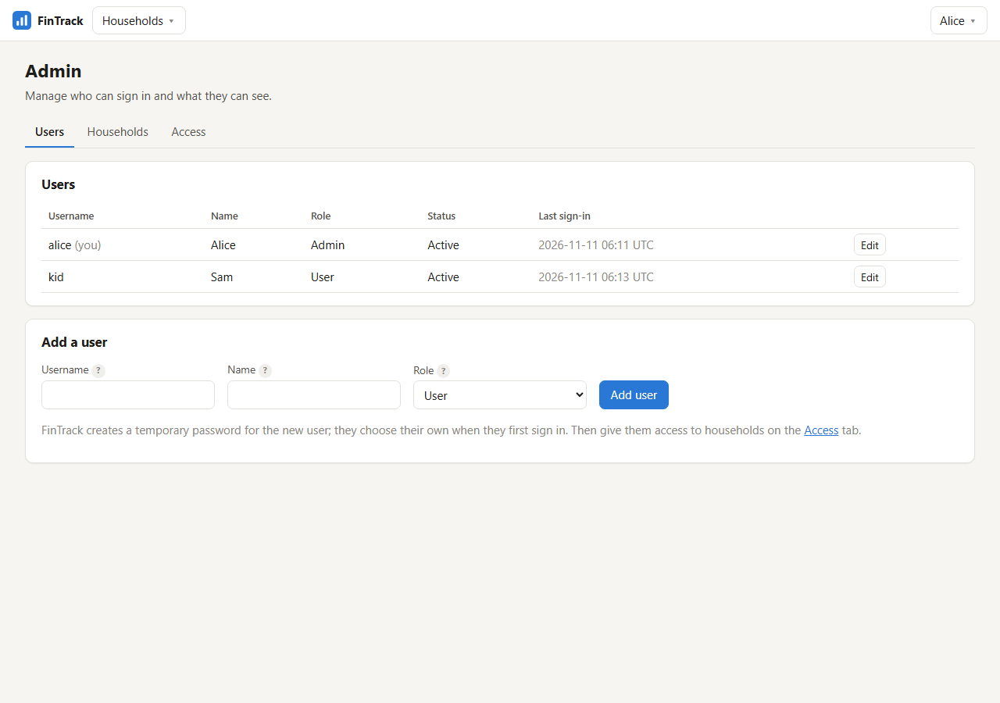
Manage users (in the menu with your name):
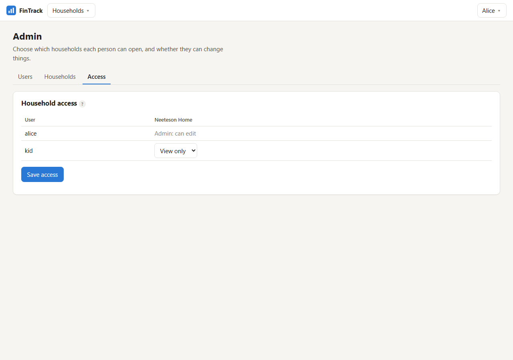
The Access tab is a grid of people and households. For each, choose No access, View only (dashboards, transactions, reports) or Can edit (also import, categorize, rules, categories, accounts, budgets, mortgage). Admins can always open and edit every household. Changes apply immediately, even to someone who is signed in.
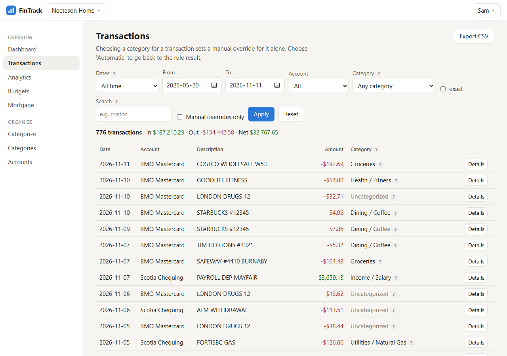
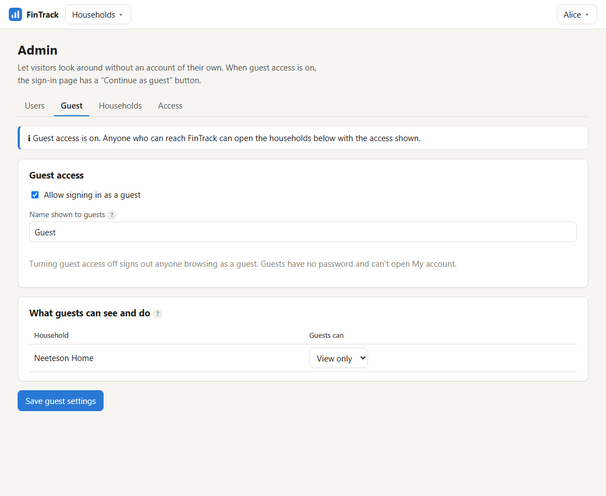
The Guest tab lets visitors look around without an account of their own:
The guest account is shared by everyone who uses the button. It has no password, can't open My account, and its sessions end when the browser closes. Turning guest access off signs out anyone browsing as a guest; the access settings are kept for next time.
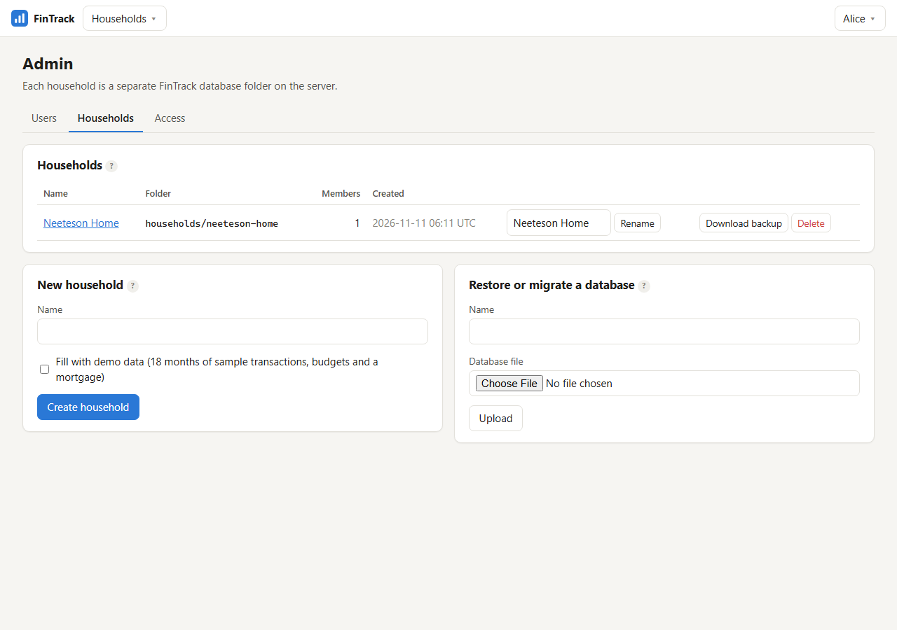
fintrack.sqlite: a downloaded backup, or the database folder of the old
FinTrack desktop app.households/.trash on the
server; nothing is destroyed until you remove it there.The browser isn't using HTTPS, so it drops FinTrack's secure cookie. The sign-in page warns
about this. Open FinTrack through your HTTPS proxy, and make sure the proxy sends
X-Forwarded-Proto. Only if you deliberately run without HTTPS, set
FINTRACK_SECURE_COOKIES=false.
You don't have access to that household, or the proxy strips the /finances
prefix. It must forward the full path.
Wait the number of seconds shown; the delay grows with each wrong password and resets after a successful sign-in.
Run docker compose exec fintrack fintrack-server admin reset-password name; it
prints a new temporary password.
Undo it in Import history, then import again: change the account on the review page, or use Edit mapping (e.g. tick Flip sign).
Banks sometimes change the description when a transaction posts. Use the skip rows option in the format to ignore pending rows, or delete the extra transaction.
Set TZ in compose.yaml to your time zone.
| Format | Notes |
|---|---|
| Scotiabank: bank account (classic, no header) | Five columns: date, amount, –, description, details. Recognised by its shape. |
| Scotiabank: credit card (classic, no header) | Three columns. Recognised by its shape. |
| Scotiabank: online banking export (with header) | Recognised by its header row. |
| BMO: bank account | Header found below BMO's preamble line; the card/account number column picks the account. |
| BMO: credit card | The masked card number picks the account. |
| Setting | Default | Meaning |
|---|---|---|
FINTRACK_BASE_PATH | / | Address prefix, e.g.
/finances |
FINTRACK_BIND | 0.0.0.0:8080 | Listen address |
FINTRACK_DATA_DIR | /data | Where data is stored |
FINTRACK_SECURE_COOKIES | true | HTTPS-only cookies |
FINTRACK_SESSION_DAYS | 30 | "Keep me signed in" length |
FINTRACK_MAX_UPLOAD_MB | 50 | Largest upload |
FINTRACK_ADMIN_USER / _PASSWORD | unset | Create the first admin at start-up |
TZ | UTC | Time zone |
| Command | What it does |
|---|---|
fintrack-server admin create NAME | New admin with a temporary password |
fintrack-server admin reset-password NAME | New temporary password |
fintrack-server admin list | List accounts |
fintrack-server healthcheck | Exit 0 if the server answers |
/data/auth.sqlite holds people, households, access and sessions. Each household
is a folder in /data/households/ with fintrack.sqlite and an
imports/ folder holding a copy of every imported CSV.